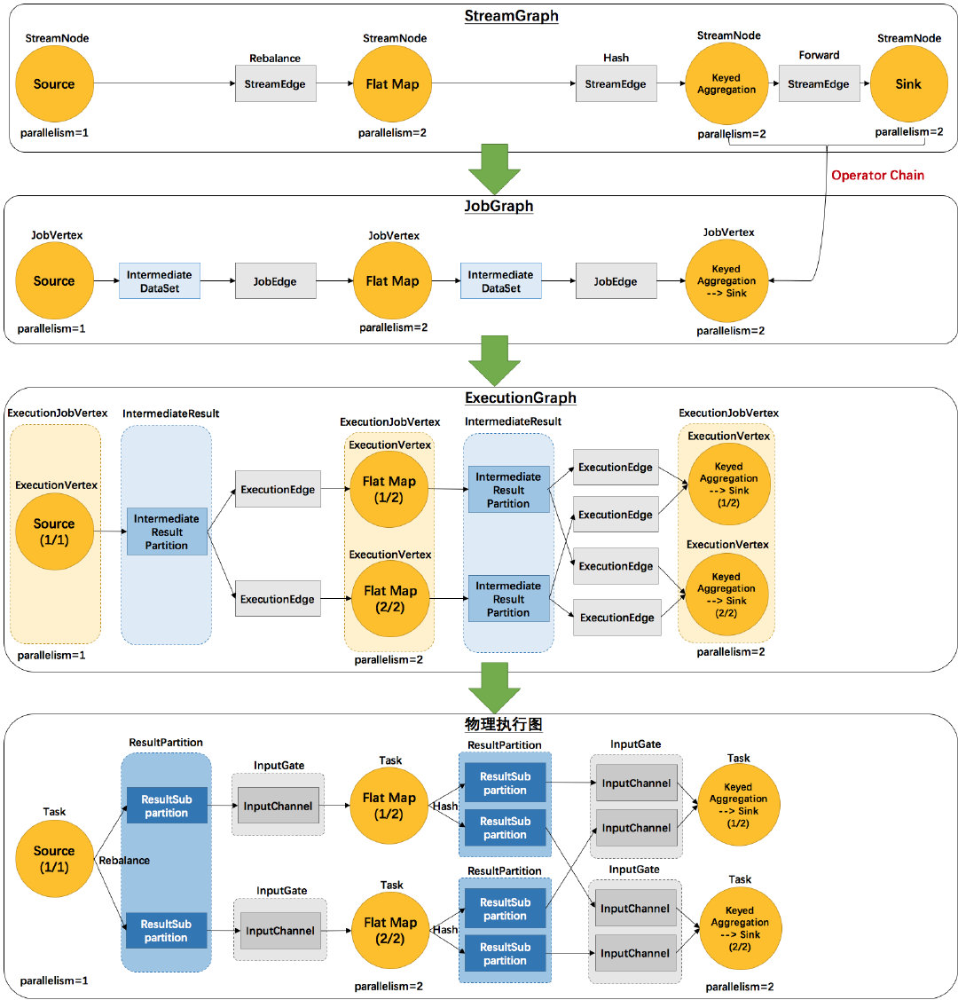
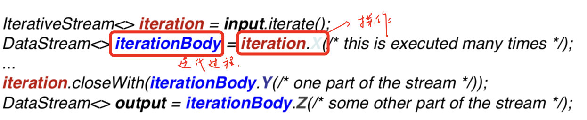
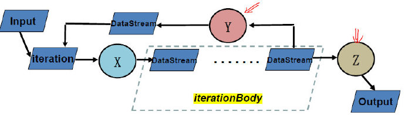
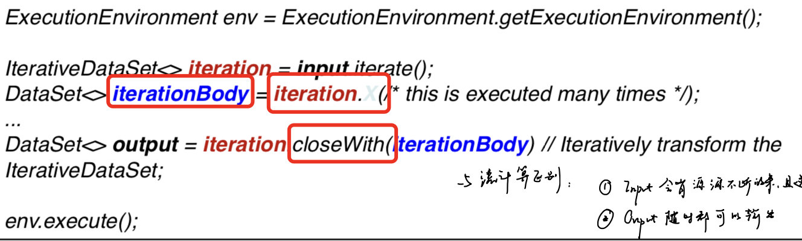
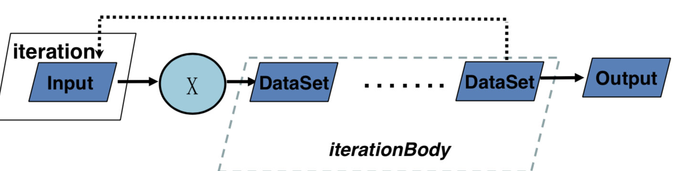

批流融合系统
需求
某些场景可能既有大批量数据，又有快速产生数据，某些数据的实时要求性高（如广告投放）
- 离线训练/实时决策
Lambda架构
组成
主要分为Batch Layer/Serving Layer/Speed Layer
Batch Layer
- 全量计算，存储MasterDataset，不变的持续增长的数据集
Serving Layer
- 对batch view进行操作，从而为最终的实时查询提供支撑
- 对Batch view的随机访问/更新batch view
这两个Layer缺点是：在运行预计算的数据不会马上到batch view中，不能保证实时性
Speed layer
- 增量计算：只处理最近的数据，更新 realtime view
当进行查询时，会同时落在两个View中（两边的最终结果应该一样），最后将查询结果进行merge batch view & realtime view,最终batch layer会覆盖speed layer
优缺点
- 优点
- 平衡了重新计算和延迟的矛盾
- 缺点
- 运维的复杂性：同时维护两套系统（容错/bug也需要两套）
- 开发复杂：需要将所有的算法实现两次，批处理系统和实时系统分开编程，还要求查询得到的是两个系统结果的合并
融合
一体化系统：Spark Structured Streaming/Flink
- 批处理优先/流处理优先
统一编程：Beam
Flink
系统流程
当 Flink 集群启动后，首先会启动一个 JobManger 和一个或多个的 TaskManager。由 Client 提交任务给 JobManager，JobManager 再调度任务到各个 TaskManager 去执行，然后 TaskManager 将心跳和统计信息汇报给 JobManager。TaskManager 之间以流的形式进行数据的传输。上述三者均为独立的 JVM 进程。
Client
- Client 为提交 Job 的客户端，可以是运行在任何机器上（与 JobManager 环境连通即可）。提交 Job 后，Client 可以结束进程（Streaming的任务），也可以不结束并等待结果返回。
任务
- 将用户程序翻译成逻辑执行计划(类似sparkDAG)
- 逻辑执行计划的优化
JobManager
- JobManager 主要负责调度 Job 并协调 Task 做 checkpoint，职责上很像 Storm 的 Nimbus。从 Client 处接收到 Job 和 JAR 包等资源后，会生成优化后的执行计划，并以 Task 的单元调度到各个 TaskManager 去执行。
任务
- 管理/调度/协调TaskManager
TaskManager
- TaskManager 在启动的时候就设置好了槽位数（Slot），每个 slot 能启动一个 Task，Task 为线程。从 JobManager 处接收需要部署的 Task，部署启动后，与自己的上游建立 Netty 连接，接收数据并处理。
任务
- 与JobManager、TaskManager保持通信
- 启动Task线程，实际执行任务
- 相同节点或不同节点上Task线程进行数据交换
Graph
批处理:Program → BatchGraph → Optimized BatchGraph → JobGraph （基于规则/代价的优化）→ ExecutionGraph（考虑并行的问题）
流计算:Program → StreamGraph → JobGraph（chaining优化）→ExecutionGraph（考虑并行的问题）
- StreamGraph：是根据用户通过 Stream API 编写的代码生成的最初的图。用来表示程序的拓扑结构。
- JobGraph：StreamGraph经过优化后生成了 JobGraph，提交给 JobManager 的数据结构。主要的优化为，将多个符合条件的节点 chain 在一起作为一个节点，这样可以减少数据在节点之间流动所需要的序列化/反序列化/传输消耗。
- ExecutionGraph：JobManager 根据 JobGraph 生成ExecutionGraph。ExecutionGraph是JobGraph的并行化版本，是调度层最核心的数据结构。
- 物理执行图：JobManager 根据 ExecutionGraph 对 Job 进行调度后，在各个TaskManager 上部署 Task 后形成的“图”，并不是一个具体的数据结构。

| 涵义 | 流计算 | 批处理 | 部件 |
|---|---|---|---|
| 用户程序 | Stream API程序 | Batch API程序 | Client |
| 程序的拓扑结构 | StreamGraph | DAG/Optimizer | Client |
| 逻辑执行计划 | JobGraph | JobGraph | Client |
| 物理执行计划 | ExecutionGraph | ExecutionGraph | JobManager |
| 物理实现 | 分布式执行 | 分布式执行 | TaskManager |
流水线机制
数据传输方式
- 批处理：一次一个Table
- Storm：一次一个Tuple
- Flink：一次一个Vector
- 尽可能采取流水线方式，一旦buffle满了（批处理）或超时（流计算），就向下游进行发送
在流计算模式中：完全采用流水线机制
批处理中：除了pipeline breaker外采用流水线，如排序，hash table（不是宽依赖的意思）
在Spark中，遇到Shuffle则阻塞（但并不一定需要阻塞，只是为了容错）
Iteration
在Flink中，有三种迭代类型，一种对应DataStream，两种对应DataSet
DataStream Iteration


这里的iterationBody接收X的输入，并根据最后的closeWith完成一次迭代，另外的数据操作Z退出迭代。
由于DataStream有可能永远不停止，因此不能设置最大的迭代次数，必须显式的指定哪些流需要迭代，哪些流需要输出。
这时候，一般使用split transformation 或者 filter来实现。
DataSet Bulk Iteration


可以发现与DataStream类似，但必须要迭代结束才能有输出。
同时，除了设置最大迭代次数，在closeWith中还可以添加第二个DataSet，当其为空时，则退出循环。
与流计算的区别：
- Input会有源源不断的来，且迭代过程中会有数据进入
- Output随时都可以输出
DataSet Delta Iteration
由于在图计算中有很多算法在每次迭代中，不是所有TrainData都参与运算，所以定义Delta算子。
workset是每次迭代都需要进行更新的，而solution set不一定更新。
与批处理迭代的区别
- 在Hadoop/Spark中，迭代都是用户编写的程序，每次迭代时独立的job
- 在Flink中，是系统内置的，可以提供优化
Table&SQL
Table API 与SQL基本相同，只是在SQL中，由于是字符串语句，在编译时无法查错。
批流等价转换
主要是想要让SQL在Stream上运行。
为了实现Contiuous Query，Flink设计了Dynamic Table对Stream进行相互转换。
Stream → Dynamic Table
- Append mode
- 很简单，直接添加一项即可
- Upsert mode
- 需要将相同key的值更新或者插入
- 同样支持SQL和Window操作
Dynamic Table → Stream
为了容错，使用Undo/Redo日志
容错机制
JobManager 故障-> Zookeeper
TaskManager 故障 -> 主要考虑Task的故障（由于迭代操作是内置的，因此需要系统考虑）
使用checkpoint的方式
非迭代过程的容错
对于批处理和流计算是一样的（主要考虑State）
Pipelined Snapshots
- Synchronous Snapshots
- 会将数据切分成好几份，保存State
- 会造成不必要的延迟，且造成阻塞
- Pipelined Snapshots
- Light checkpoint/Distributed snapshots/Exactly-once guarantee/异步的同步
- 不要求Task停下来，遇到标记，进行记录
迭代过程的容错
流式迭代
- 属于有环的Pipelined Snapshots
将迭代的数据看作虚拟的输入
批式迭代
特点：循环不结束，没有输出
- 两种CheckPointing方法：
- Tail checkpoint/Head checkpoint
Spark Structured Streaming
流向表转换
- Unbounded Table
- event time作为表中的列加入到window运算/引入流水线机制
- 依然没有定义session window
- 流与表的统一到DataSet/DataFrameAPI
底层引擎依然是批处理，继续使用micro-batch模型
Beam
需要格外注意什么？
- 统一API（会不会造成性能差异）
- 统一编程（底层的两个系统如何统一）
WWWH模型
- What results are calculated?
- 计算什么结果? (read, map, reduce)
- 批处理系统可实现
- Where in event time are results calculated?
- 在哪儿切分数据? (event time windowing)
- Windowed Batch
- When in processing time are results materialized?
- 什么时候计算数据? (triggers)
- Streaming
- How do refinements of results relate?
- 如何修正相关的数据（对于Delay的数据）?(Accumulation)
- Streaming + Accumulation
BeamPipeline
数据处理流水线
- 表示抽象的流程
- 与“Flink流水线机制”不是一个概念
KEYS
批流融合系统
- 大数据的5V
- Lambda架构组成
- Lambda优缺点
Flink
- 逻辑执行计算的优化在哪里完成？
- 系统架构与MapReduce/Spark/Flink的比较，进程和线程的对比
- Flink中的图，每一步在干什么
- 所有的图（JobGraph/BatchGraph/Optimized BatchGraph/SteamGraph）都是有向无环图
- Flink流水线机制（批处理和流计算中的不同点），与Spark中选择Pipeline的标准不同
- 在Table&SQL中，若定义的环境为：
StreamTableEnvironment，则输入的数据不一定非要是Streaming表，也可以是静态的，这是因为在Flink的定义中，batch是Streaming的特殊情况；反过来，在BatchTableEnvironment中，不能输入流式数据 - SQL与Table API的区别：SQL语句在编译时无法查错
- Flink非迭代式同步的主要方法（批处理和流计算一样吗？）
Spark v2
- 主要改进
Deam
- 主要需要考虑的问题
- WWWH模型
- BeamPipeline